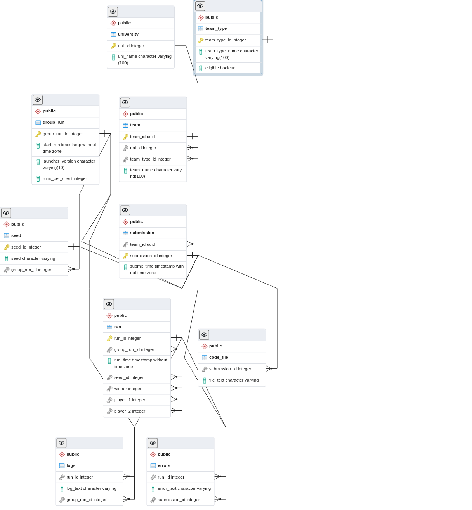

Server Documentation¶
Important Info!¶
There is a new server this year and it improves on the previous server in two major ways
More information is stored and kept in the database
You can access this information through the client
This functionality is optional, and the below section highlights the commands you need to know
Group runs¶
Unlike previous years, clients will be run together at a distinct point in time, known as a group run. The benefit to group runs is that you can fetch information relating to each group run (such as launcher version!) and view your progress (or regression) over time!
The downside is that there is no “queue” like previous years, and you have to wait for the group run to complete before your next client is run.
Other cool features¶
HTTPS!
- Rate Limiting!
Note that the default rate limit is 1 / second
Seed downloading!
Client Downloading!
SQL!
ASCII table and CSV output!
Client Validation
The Important commands that you need to know!¶
Registering¶
Rate Limit: 10 / hour
Registering is required to recieve your VID ( Don’t share with anyone!) which in turn allows you to submit clients and view team specific information. If your teamates wish to upload to the server, you’ll have to send them the vID.
python launcher.pyz client -register
you will then be prompted to enter information
submiting clients¶
Rate Limit: 1/minute
python launcher.pyz client -submit
Once you’ve registered, you can submit your client. At least one client must be submitted by 10pm to be elligible to win. The server will automatically look for files in the root directory that contain the word ‘client’. Otherwise, you can manually select the file. Once you’ve confirmed the file, it will be uploaded to the server and then run against other clients to determine placing. Feel free to submit as many times as you like, but please refrain from excessive uploads.
leaderboard¶
Rate Limit: 5/minute
python launcher.pyz client leaderboard
Returns the leaderboard for elligible contestants. Alumni will want to run the command
python launcher.pyz client leaderboard -include_alumni
Also note you can retrieve the leaderboard for previous group runs using
python launcher.pyz client leaderboard -group_id <group_run_id>
view stats¶
Rate Limit: 5/minute
python launcher.pyz client stats
Returns stats relating to your submissions(s). All stats relate to your most recent submission. Please note that the stats will continue to change until all runs are completed.
Other Fun Commands!¶
Note on output¶
Some of the tables from the commands can be quite large. You can write these large results to a file using the > opperator. EX:
python launcher.pyz client stats -runs_for_group_run <group_id> > output.txt
You can also specify csv output if desired by passing the -csv flag to the server parser. EX:
python launcher.pyz client -csv leaderboard > output.csv
runs for group run¶
Rate Limit: 5/minute
python launcher.pyz client stats -runs_for_group_run <group_id>
Returns all of a team’s runs for a given group run
runs for submission¶
Rate Limit: 5/minute
python launcher.pyz client stats -runs_for_submission <submission_id>
Returns all of the runs for a given submission
get submissions¶
Rate Limit: 5/minute
python launcher.pyz client stats -get_submissions
Returns all of the submissions for a team
get group runs¶
Rate Limit: 5/minute
python launcher.pyz client stats -get_group_runs
Returns all of the group runs a team participated in
get code for submission¶
Rate Limit: 1/minute
python launcher.pyz client stats -get_code_for_submission <submission_id>
Returns code for a given submission
get errors for submission¶
Rate Limit: 1/minute
python launcher.pyz client stats -get_errors_for_submission <submission_id>
Returns errors for a given submission
View score over time¶
Rate Limit: 5/minute
python launcher.pyz client leaderboard -over_time
Returns your team’s placing and total wins for each group run
Get a seed¶
Rate Limit: 1/minute
python launcher.pyz client get_seed -run_id <run_id>
Downloads a given seed for a run. Not very helpful for this year’s PvP competition, but you can imagine the possibilities in a PvE competition!
Client Runner¶
After your client has been uploaded to the server, it will be periodically ran against other clients to determine who has the best client. This is done by the Client Runner, Which has the following flow:
If there are more than two clients, the program runs
Four seeds are generated
Each seed is uploaded to the server
Every team plays every other team on each seed twice, with one client going first each time
- If the games are interupted by an error, all results will be deleted.
Note that if a client throws an error, that client loses and the results are still valid
It is also possible for clients to tie by dying on the same turn
The logs for the first winning game for each team are saved, and then played on the visualizer
Process ends, waits a bit, and then repeats
The deterministic behavior of the game has been confirmed. IE if every team uploads the same client, they all tie with the same number of wins.
Visualizer¶
To allow participants to have an idea of what stratagies teams are persuing, Logs from the client runner will be played on the twitch stream. It follows the following flow:
Visualizer checks if there are new game logs to played
If so, the latest logs are played
The visualizer waits a bit
Process repeats.
This does mean that some logs may never be played if playing all of the logs takes too long for the visualizer. It may also be prudent for the Dev team to restart the program so the most recent logs are played.
Database Schema¶
If you’re confused about the schema of the database, the below ERD diagram is provided. Note that all foriegn keys have cascading deletes. (It’s a bit ugly, but this is what the auto format likes and I can’t do it better)
{kind=link}
Validation¶
There are some forbidden actions your client can’t take. These are
Importing imports not in the whitelist
using the keyword ‘open’
using an uncommented ‘print’ keyword
Import Whitelist¶
The current import white list is
“game.client.user_client”, “game.common.enums”, “math”, “game.common.action”, “game.common.moving.shooter”, “game.utils.partition_grid”, “game.utils.collision_detection”, “game.utils.player_utils”, “random”, “numpy”